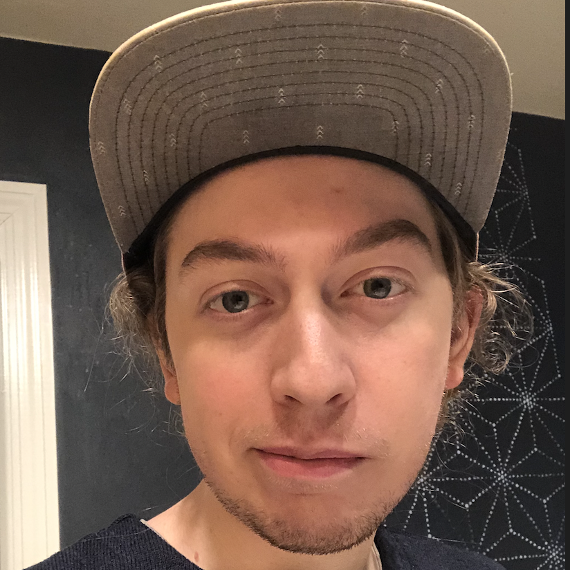
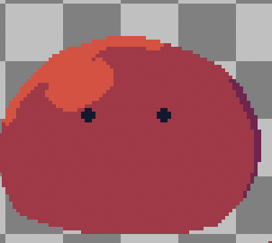

As a game developer I strive to bring excellence to my work and passion to my projects, using my portfolio to show how I’ll achieve both.
Goal:
With my portfolio, I’ll be showcasing the skills I’ve developed throughout my time in college, with a focus on areas that contribute meaningfully to collaborative team environments. Highlighting not only technical abilities, such as game development, scripting, and design, but also soft skills like communication, adaptability, and critical thinking. To give viewers a clear understanding of my progression as a developer I’ll showcase examples of real projects, challenges I faced, and how I overcame them. By walking through these key experiences, I hope to demonstrate my readiness to contribute to a professional creative team. Above all I hope my portfolio gives you a better look into who I am and what I’d like to accomplish through the medium of games.
Projects:
Gungeon Clone:
One of the projects I’m most proud of is an Enter the Gungeon clone I made in Unity. For the project I wanted to create the same feel that EtG has while also focusing on what makes the game so engaging. During the course of this project, I learned more about the Unity system and how to make a game from scratch, such as learning tilemaps and 2d collision. Additionally, I learned about enemy navigation and used the A* algorithm to implement enemy movement. Lastly, I utilized Aseprite to edit 2d sprites and even make some of my own using 2D pixel art. Overall, this project helped me grow as a developer, teaching me how to navigate roadblocks and make a finished game.
